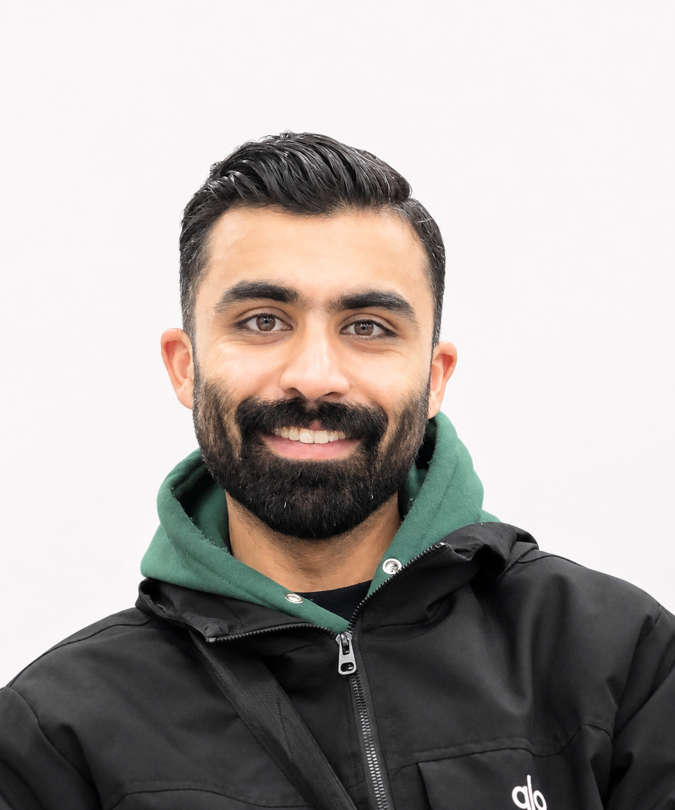

Assad Hamid
Civil Engineer · Transportation Planning & Management
Graduate studyDalian University of Technology (DUT)
- China ranking#28 in ChinaShanghaiRanking · BCUR 2026
- Asia ranking#53 in AsiaCWUR · Regional Ranking 2026
- World ranking#151–200 worldwideShanghaiRanking · ARWU 2026
- Traffic Safety and Risk Assessment
- Road Users Behaviour and Interactions
- Transport-Demand Modelling
- ML and DL in transportation
- Equitable Urban Mobility
- Public Transportation
EDUCATION
- Master of Engineering, Transportation Planning and ManagementDalian University of Technology (DUT), Dalian, China
Research Direction: Investigating pedestrian–vehicle conflict severity using drone-derived trajectory data, ML & DL. The research integrates predictive modelling, matched case–control comparisons, time-resolved kinematic analysis, and severity-stratified behavioural assessment to identify early indicators of critical interactions and evaluate the incremental predictive value of surrounding traffic.
- Bachelor of Civil EngineeringNational University of Sciences and Technology (NUST), Islamabad, Pakistan
Final Year Project with the Punjab Metrobus Authority: assessed the impact of fare changes, travel-time variability, and COVID-19 disruption on Metrobus ridership in Rawalpindi, Pakistan.
SELECTED PROJECTS
Metrobus Accessibility & Transport Equity Analysis
- Mapped transit coverage and walking accessibility in Islamabad to identify underserved low-income communities.
U.S. Crash Severity Analysis
- Analyzed NHTSA CRSS records to examine injury-severity patterns and inform road-safety recommendations.
Vision-Based Pedestrian–Vehicle Trajectory Reconstruction and Conflict Assessment
- Developed a video-processing workflow to reconstruct pedestrian and vehicle movements and estimate conflict-point PET and TTC; examined four recordings.
Intercity Motorway Demand and Capacity Assessment
- Calibrated a VISUM corridor model to assess traffic diversion, travel-time savings, future demand, and capacity.
TECHNICAL SKILLS
- Programming and data analysis
- Python · SQL · Power BI (DAX) · Advanced Excel
- Geospatial analysis
- QGIS, OpenStreetMap
- Traffic software
- PTV VISUM, SUMO
PROFESSIONAL EXPERIENCE
Project Engineer — MAK Contractors & Associates
- Managed a 100-room renovation at the five-star Serena Hotel and led procurement of construction materials and finishing supplies.
- Requested and compared vendor quotations, negotiated rates, and selected suppliers to support cost, quality, and schedule requirements.
- Coordinated hotel management, contractors, and suppliers; used Microsoft Project to track deliveries against critical-path activities.